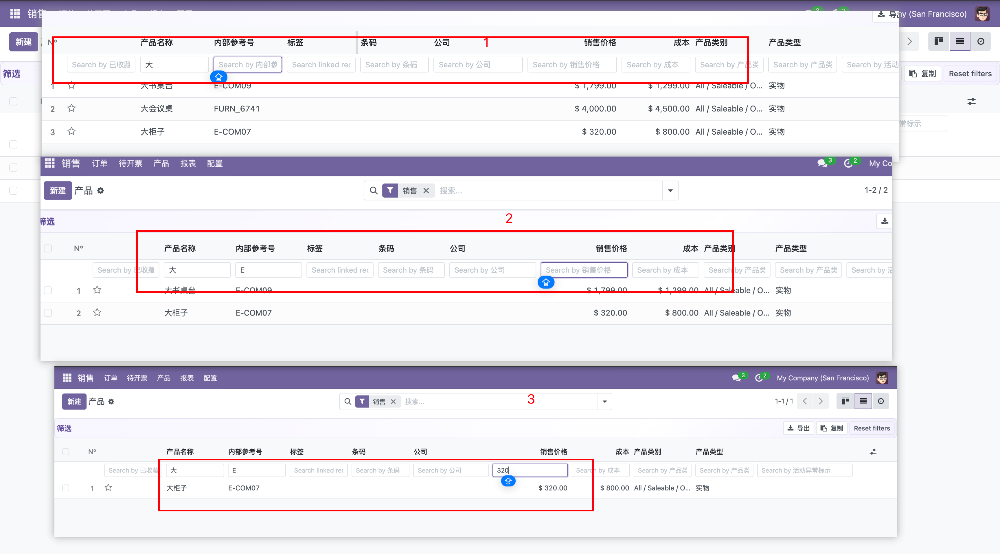
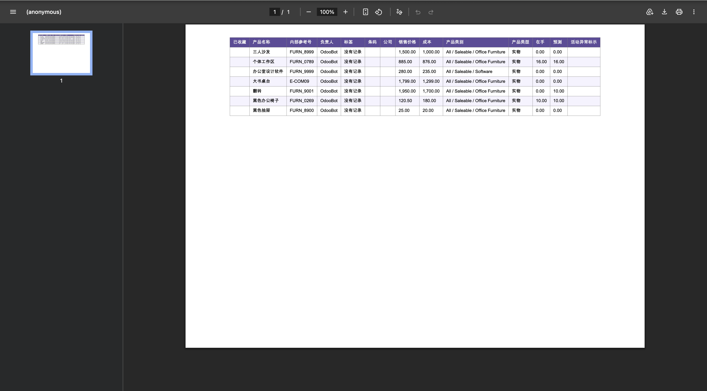
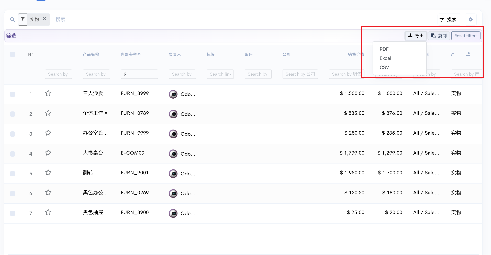

Module icon
Odoo 18 — Upgrade every main window list view with per-column quick filters, row numbers, one-click export (PDF, Excel, CSV) and copy to clipboard, plus optional per-user list preferences (inline edit and filter hints) stored on the server. Works across standard models; includes compatibility for Account file-upload list views (e.g. some Sales Order trees).
One input per visible, filterable column — text, numbers, booleans, selection,
many2one, date / datetime (ranges like 2024-03),
and many2many (name search on the comodel). Filters merge with the search bar domain.
PDF, Excel (.xlsx), CSV (UTF-8 with BOM).
Download file names use the model’s display name from ir.model
(or _description).
Copy exports the grid as tab-separated text for spreadsheets.
N° column with row index (respects pager offset). Toolbar: export menu, copy, Reset filters. Subtle row hover styling. Inline edit can follow per-user preference when configured.
Add three images in this folder before publishing:
screenshot_1.png (Demo 1),
screenshot_2.png (Demo 2),
screenshot_3.png (Demo 3).
Recommended width about 560–900px, PNG or JPG.

Shows Filters bar (export, copy, reset), second header row inputs, and the N° column.

Optional: open Export dropdown, or a list after applying column filters + search domain.

Use for a downloaded PDF/Excel with model-based file name, or a list that uses the Account file-upload renderer with the same toolbar.
web, account (for file_upload_list renderer compatibility)xlsxwriter for Excel (bundled with Odoo in most installs); reportlab for PDF.ttf/.ttc files under static/fonts/ in the module
mln Advanced List View · Odoo 18 · LGPL-3
Column filters · row numbers · PDF / Excel / CSV · copy